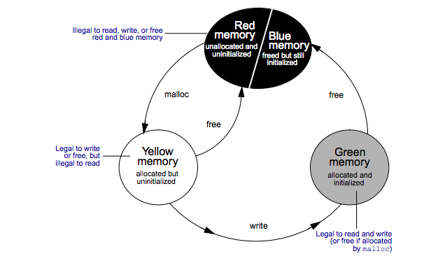
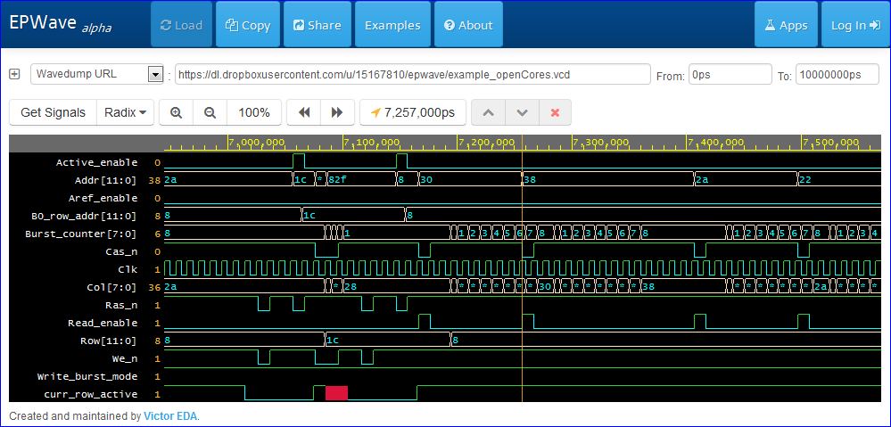

CS 2422: Software Debugging
Class 12
Course updates
Office hours today 6-7pm
Final exam tomorrow at 3pm in 2 parts
- 30 minute written exam (closed book)
- 2 hour online exam
Material: everything we've covered in the course
Memory errors
Types of memory errors
Uninitialized memory read
int x;
printf ("%d", x);
Using freed memory
int *x = malloc (...);
free (x);
printf ("%d", *x);
Types of memory errors
Array bounds overruns
int x[10];
printf ("%d", x[10]);
....
Responsible for a large number of security exploits
Can be caught in C with tools like Purify and Valgrind memcheck
May also apply to safer languages e.g. when manipulating buffers
Detecting memory errors
Introduce additional state per memory location
Introduces performance overhead, but very effective at catching errors
Instrument reads/writes to memory to check + maintain this state
e.g. error if:
- memory location is being read and is in uninitialized state
- memory location is being read/written/freed and is in unallocated state
Memory states
Detecting array bounds violations
Introduce fences around arrays
Check if the fence area is being read/written
Heartbleed bug
Major bug discovered in OpenSSL in 2014
Servers could leak data in response to Heartbeat section of protocol
Missing input check
Caused immediate upgrade with fix
Unknown what was leaked: needed immediate changes to passwords, keys, etc.
Possible research area
The need to handle exceptions is ubiquitous
Exception syntax (try-catch) is cumbersome...
...and discourages precise expression of desired semantics
Can we invent better syntax?
Examples
List<String> tabContents; [ignore-exceptions self, elements]
...
for (String t: tabContents) // ex. ignored if tabContents is null
if (t.contains (searchString)) // ex. ignored if t is null
...
Could be resolved statically if possible
...or perhaps dynamically, by associating an "error-tolerant" bit with objects
Or could use aspects
Possible improvement
Exception handlers could be associated with objects like methods
If an exception happens on this object, the desired behaviour is { ... }
Object could also carry state saying "Exception occurred on my method, so my state is unreliable"
This unreliable state could propagate whenever the object is used (decision taken at final user-visible point)
Analogous to floating point NaNs
Prioritization of code/variables
priority low: {
// code for stats, logging etc. which is not that important
}
Logger log; [low priority]
Only best-effort to run low priority code
Runtime may ignore exceptions in this block
Or simply skip it if running low on battery, system overloaded, etc.
Threading and errors
A "crash" in a thread only kills that thread
Never stop the entire system (System.exit()) in a multi-user environment!
Micro-threads (like event handlers) can contain crashes
Large blocks of code could be written as functions executed in micro-threads
Aside: designing new languages
Keep gathering patterns of examples that cannot be expressed in a language
Often implemented imprecisely or with clumsy hacks (or things like Aspects)
Those patterns can make it into syntax or a new PL
You know a language well when you realize its limitations
Detecting errors
Often no easy way to tell if the system is correct
But have a reference that serves as a "golden model", e.g.
- an executable specification
- a simpler version less likely to have errors
- a previous release
- implementation in a different language
Run both systems in parallel and compare results
Debugging hardware
Hardware debugging
Multiple types of test / debug
Pre-silicon (in simulation)
Post-silicon (on tester)
Post-silicon (in system)
Looking for design or manufacturing defects
Finding hardware (design) bugs
High-stakes environment: Single bug can cost $10-$20M and a lot of time
Hardware design in HDL (e.g. Verilog), run on a simulator
Large testing teams, writing directed test cases
Large tools teams, writing custom tools and automatically generated tests
"Tape out" to fabrication when team satisfied design is correct
Hardware debugging techniques
Similar to software:
- assertions in the code
- stepping, breakpoints, etc.
- waveform viewers for detailed trace
- debug real hardware with logic analyzers
A waveform viewer
In simulation
A logic analyzer
For real hardware

Formal verification
Proof that code matches spec or invariants hold, etc.
Limited to some blocks, e.g. FPU, cache controllers, etc.
Needs invariants that can be proved
Tends to be manually intensive
Pre-silicon testing
Use a high-level specification ("golden model") for comparison, e.g. an instruction-accurate simulator (ias)
Compare design's results with the ias after each instruction
Run (pseudo) random programs on both
Simulated on thousands of machines in parallel (or customized hardware)
Finds a significant fraction of bugs
Learning objectives
Realize that debugging is a necessary CS skill
Learn to think systematically about debugging
Become expert at using debugging tools
Think about writing your own debugging tools
Think about design for debug in your programs
Get some exposure to research in debugging
Understand basics of hardware debugging (if time permits)